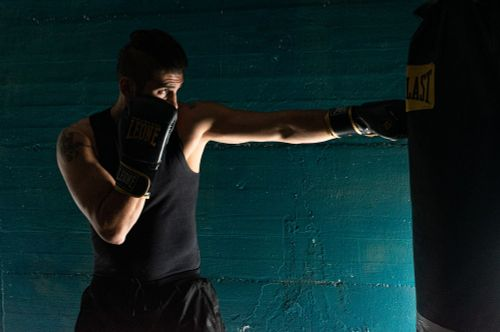
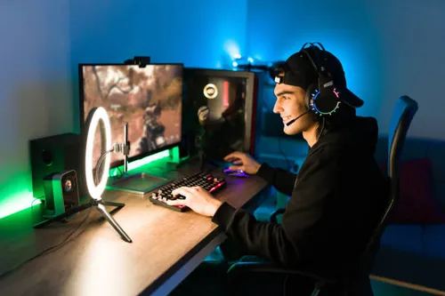

HOENS Mathieu
Présentation
Je m'appelle Mathieu HOENS et j'ai 19 ans. Je suis né à Chalons-En-Champage dans la Marne (51).Je suis actuellement étudiant en BUT informatique au sein de l'IUT de Lens. Durant ma Deuxième année je vais devenir alterant chez ITEKA une entreprise informatique qui est principalement spécialisé dans le réseau.
Après mon BUT je compte me spécialisé dans la sécurité informatique ( cyber-sécurité ) car en ce monde nous avons de plus en plus besoin de protéger nos données personnels.
Loisirs
Mes loisirs sont :La boxe 
La cuisine
Les jeux vidéos 
Télécharger mon CV en francais
Télécharger mon CV en anglais